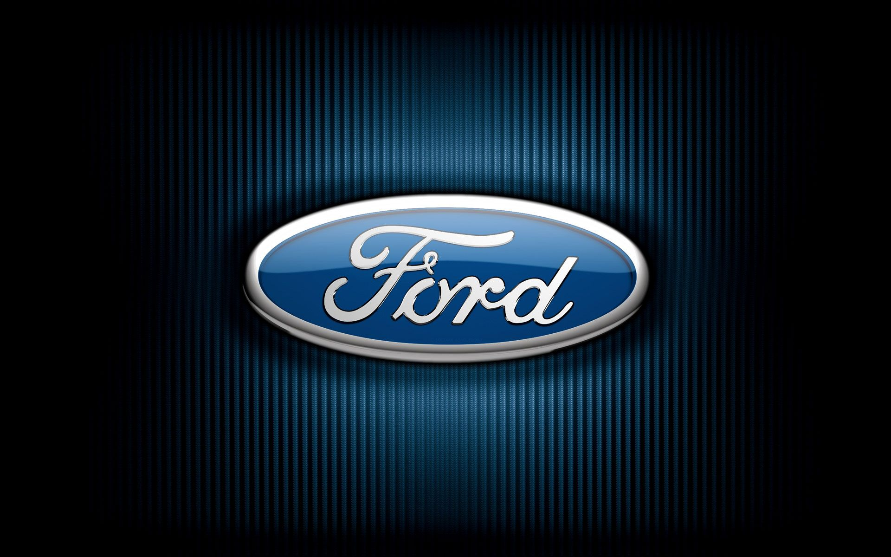

During my last year of college, I worked under the mentorship of a risk management, forecasting, and simulation professor who guided me and taught me how to read and analyze data as well as how to manipulate and use said data to forecast and simulate to arrive at certain outcomes or decisions. In this project I Used Oracle Crystal Ball's simulation tools to forecast financial information, such as Capital Budgeting given stochastic inputs and injection conditions, NPV, and calculating the probability of profitability

Used Oracle Crystal Ball to price an IPO given certain financial information, determine VaR (Value at Risk), as well as optimal weightings for a portfolio of ETFs

A Case Study Analysis of Ford Motor Company, identifying and reccomending a strategic direction using internal and external analysis tools such as SWOT, TOWS, PESTLE, and Porter's Five Forces

Full case study and business recommendation in a team of six. Covered and examined the finance, marketing, operations, and management of Tesla. Used to analyze the current state of Tesla, as well as come up with a plan of action for the company in the future. Presented to a team of four professors covering each business discipline.

Examined and evaluated Tottenham football club finances and share price in its base case, as well as after three potential business reccomendations. Compared these results to determine the decision that would maximize its Enterprise Value (EV) and share price.
Determined expected Cash Flows, NPV, and IRR given certain financial information. Conducted sensitivity analysis and evaluated Real Options as well as using tools such as Monte Carlo Simultion.
Analysis and Optimization of a five stock portfolio using CAPM, 4-Factor, and other factors such as Sharpe Ratios to determine the minimum variance as well as optimally weighted portfolios for the given client